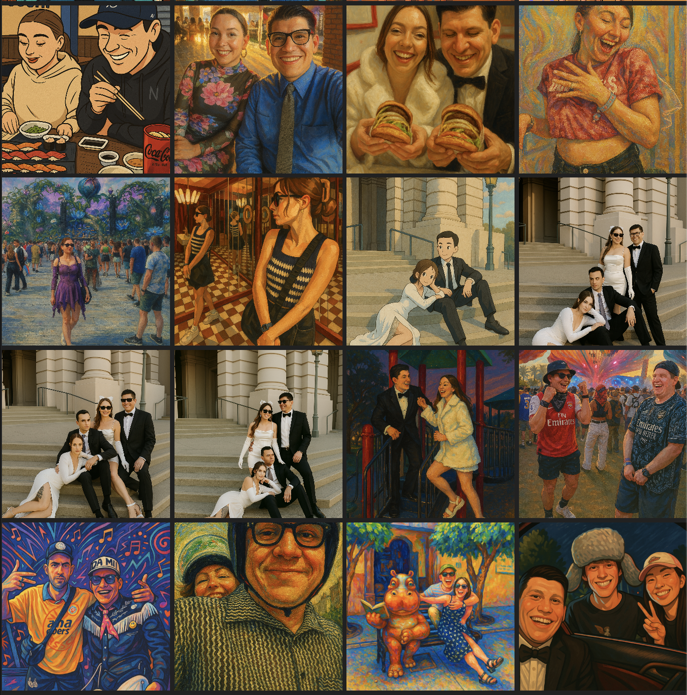

Concept worlds
Surreal images, video ideas, and playful visual experiments.
MORE WORLDS
Surreal concept worlds and visual experiments.
Surreal images, video ideas, and playful visual experiments.


A look at the visual process: many small experiments together, before choosing a direction. These are archived concept boards, with their original framing retained.